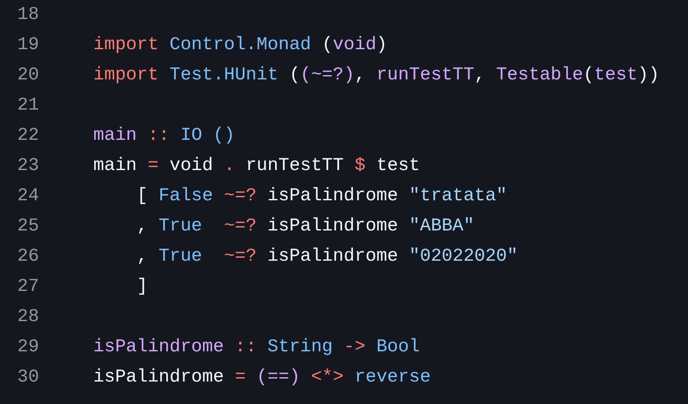

Закончил выгрузку старых реп

Закончил выгрузку старых реп на GitHub.
Фуф, наконец-то завершил упражнение с восстановлением старых реп для GitHub.
Часть реп уже потеряна, часть просто валялась по отдельности, часть переносил из zip-ников, которые вообще никакой истории не хранят… Но всё равно, приятно, что на GitHub снова есть исходнички.
По мелочи надо будет ещё подправлять код, но это потихоньку, не в один наскок.
У всех реп теперь UNLICENSED как лицензия, если кому-то это важно и нужно.
P.S.: Смотрю на исходники Haskell и умиляюсь, насколько странно он выглядит спустя годы :)